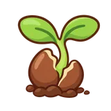
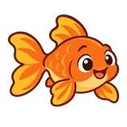
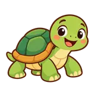
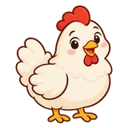
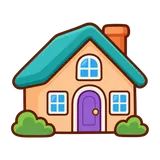
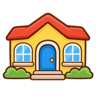
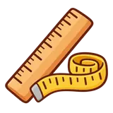
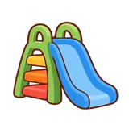
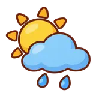
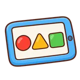

Ilustraciones para Mi año
63 dibujos · Estilo infantil cálido y sencillo · Fondo transparente
Planta en macetaJSON · 5.6 KBPerroJSON · 5.8 KBAsí soy y me cuidoJSON · 5.9 KBMovimiento y recorridosJSON · 5.9 KBBandera del PerúJSON · 4.3 KBGota de aguaJSON · 3.9 KBÁrbolJSON · 5.5 KB
Semilla y broteJSON · 5.6 KBFlorJSON · 6.0 KBGatoJSON · 5.7 KBAveJSON · 5.9 KB
PezJSON · 5.8 KBConejoJSON · 5.8 KB
TortugaJSON · 5.6 KBMariposaJSON · 5.9 KBAbejaJSON · 5.8 KB
GallinaJSON · 5.8 KBVacaJSON · 6.0 KBNiñoJSON · 5.9 KBNiñaJSON · 5.9 KBPersonas cuidadorasJSON · 6.0 KBFamiliaJSON · 6.0 KB
CasaJSON · 6.0 KB
Jardín y escuelaJSON · 5.8 KBComunidad y barrioJSON · 5.6 KBJuego y colaboraciónJSON · 5.8 KBLápizJSON · 4.0 KBPincel y acuarelasJSON · 5.9 KBLibro de cuentosJSON · 5.5 KBInstrumentos y músicaJSON · 5.6 KBIdea para explorarJSON · 5.0 KBTíteresJSON · 5.7 KBBloques de construcciónJSON · 3.3 KBFormas geométricasJSON · 4.9 KBCantidades y conteoJSON · 4.1 KB
Regla para medirJSON · 5.8 KBMercadoJSON · 5.9 KBFrutasJSON · 5.6 KBVerdurasJSON · 5.9 KBCocinaJSON · 5.6 KBSalud y cuidadosJSON · 4.8 KBLavado de manosJSON · 5.9 KBDientes y cepilloJSON · 5.6 KBEmociones y buen tratoJSON · 4.7 KBPelota y movimientoJSON · 5.4 KB
Juegos del parqueJSON · 5.8 KBAutoJSON · 5.5 KBBusJSON · 5.7 KBReciclajeJSON · 4.1 KBPlaneta TierraJSON · 5.7 KB
Sol y nubesJSON · 5.9 KBEstrellas y espacioJSON · 5.9 KBContamos historiasJSON · 6.0 KBPistas en los cuentosJSON · 5.7 KBMensajes y escrituraJSON · 5.8 KBExpresamos ideas con arteJSON · 5.9 KBRepartimos cantidadesJSON · 5.8 KBPlaneamos y probamos un juegoJSON · 5.9 KBCompartimos y ayudamosJSON · 5.8 KBBaile y expresión corporalJSON · 5.9 KBNavidadJSON · 5.3 KBExploramos y preguntamosJSON · 5.5 KB
TecnologíaJSON · 5.7 KB